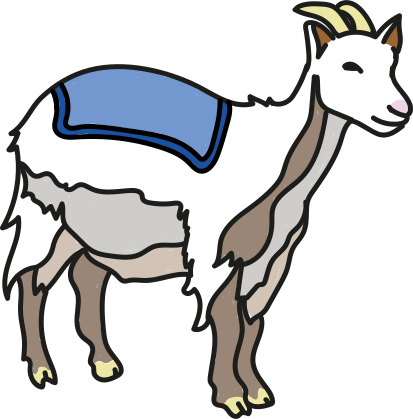
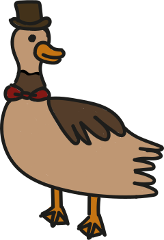
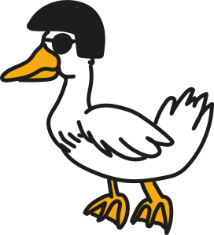
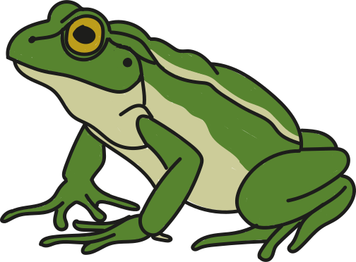
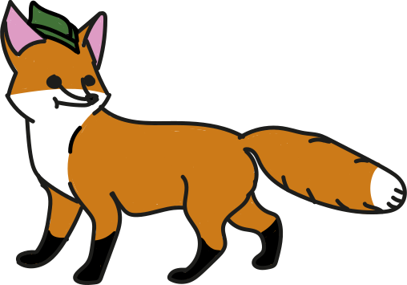

Descripción
Desplumado es el nuevo juego de plataformas en 2D en el que el protagonista, el pato Hugo, tiene que superar varios obstáculos y enemigos para poder atender a su familia en un mundo abierto, compuesto por diferentes razas. Estas son los patos, las ranas, las cabras y los zorros. Salta de lado en lado con el pato Hugo, subiendo a alturas extremadamente altas y descubriendo secretos sobre el pasado de este mundo ficcional . Al ser un mundo abierto de gran escala, el jugador tendrá total libertad de explorar cualquier zona que quiera y ver escenarios que no se verían en la historia principal. A medida que avanza la historia, aparecen nuevos obstáculos y enemigos que van aumentando la dificultad de este mundo enorme. Hugo tendrá que superar estos desafíos con nuevas mecánicas que introducirá el juego en cada nivel como doble salto, montar en aliados, invisibilidad… y mucho más.
Historia
El pato Hugo pertenece a la familia real. Él era destinado a heredar el trono hasta que su hermano Miguel, que no aguantaba la idea de vivir en la sombra de su hermano mayor, lo traiciona. Éste mata a su padre y le incrimina con la ayuda de sus asistentes más leales. Hugo, que es rechazado por toda la nobleza y su propia familia, se ve obligado a huir de la capital.
Tras un largo viaje cansado, herido y hambriento, encuentra un pueblo pequeño donde conoce a Holly, quien le cuida y atiende. Hugo, inevitablemente se enamora de ella. Con el paso del tiempo, entre ellos floreció un amor profundo y sincero. Hugo y Holly se casaron, y de su amor nacieron diez hijos, llenando sus vidas de alegría y esperanza.
Sin embargo, la felicidad de Hugo desapareció cuando su mujer cayó enferma. Desde entonces, Hugo sale al mundo exterior, lleno de misterios y peligros, con la misión de recoger recursos y alimentos para poder atender a su familia y buscar una cura para su mujer antes de que fallezca.
Trasfondo
El juego tiene lugar en el planeta tierra, concretamente en Europa, salvo que la historia tiene lugar en un país ficticio llamado “Quackonia”. En Europa, hace un siglo antes de la época de Hugo, hubo una gran guerra entre los cuatro países que dominaban Europa: Quackonia, Zorrolandia, Ranasalvanía y Cabroncete. La guerra duró 5 décadas y se denominó “La Guerra de la Granja”. Todo inició cuando heredó el trono de los zorros el príncipe Daniel. Este buscaba expandir el dominio de los zorros sobre todas las demás razas.
Su agresión desencadenó una espiral de violencia que arrasó ciudades enteras y dejó a la población sumida en el caos y la desesperación. Los otros países, a causa del miedo de todo el poder que consiguieron los zorros, formaron una alianza para protegerse de estos, que denominaron “Parraca”. Lograron resistir a múltiples ofensivas de Zorrolandia, pues cada país aportaba los recursos de los que disponía, aumentando así el poder entre los tres. Las cabras aportaron un mayor nivel de resistencia con su ejército y alta habilidad defensiva; las ranas, una elevada agilidad en combate; y, por último, los patos con su extensa variedad de armamento y recursos sanitarios.
En medio del caos de la guerra, surgieron héroes y villanos legendarios. Entre ellos se encontraba el Rey anterior al padre de Hugo, David , cuyo coraje y liderazgo inspiraron a su pueblo a resistir la opresión zorruna. Por otro lado, el Príncipe Daniel se convirtió en símbolo de la ambición desmedida y su crueldad se transmitió a su reino entero. Hubo varias batallas en distintas zonas de todos los países y tras 5 décadas de conflicto, acabó con la muerte del rey de los zorros a manos del rey David. Las consecuencias de la guerra fueron pérdidas económicas, ciudades destruidas y muchas muertes en ambos bandos. Tardaron generaciones en recuperarse. A pesar de la nueva paz establecida, quedó cierta tensión entre los países.
Arte
    Contribuciones
Para apoyar el progreso del juego consiguiendo ventajas por el apoyo podeis elegir entre las siguientes opciones:
- Juego(cuando salga): 25$
- Juego(cuando salga) + Poster conmemorativo: 35$
- Juego(cuando salga) + Figura del pato Hugo: 50$
Objetivos
Para la historia principal, queremos llegar a 10.000 euros. Ya que el mundo es enorme y hay mucha exploración. Si se logra obtener 25.000 euros, se hará una expansión (DLC) sobre la guerra. Para esta expansión, se necesita más dinero ya que tiene más contenido (Varias batallas, personajes, países…). Con 30.000 euros, se hará un modo de juego en el que unicamente el jugador se dedicara a pelear enemigos de manera infinita hasta que no pueda aguantas más, es decir, endeless mode. Por último, si llegamos a 40.000 euros, se aplicara un modo de juego en el que eliges una raza, e inicias una guerra contra otra. Además, se podra formar alizanzas entre paises y habrá distintos tipos de tropas.
Equipo
- Angel Bermudez Fariñas: artista, diseñador de sonido y animador
- David Carbonero Asin: programador, narrador y artista
- Hugo Checa Villanueva: Director del juego, programador y productor
- Miguel García Figueroa: Productor, artista y concept artist
- Gabriel González Alcoreza: Community manager y animador